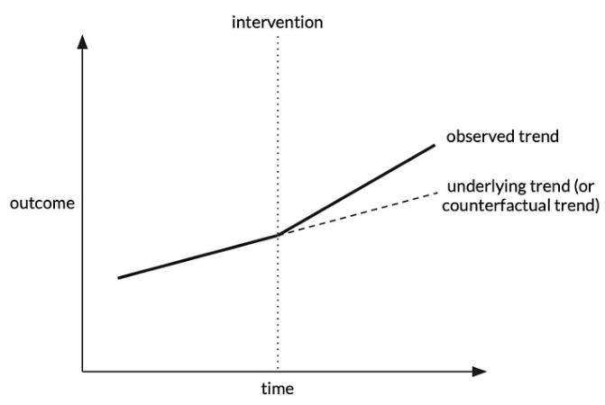
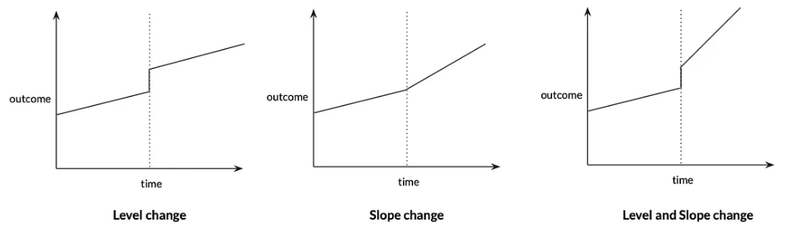

Interrupted time series (ITS)#
The interrupted time series (ITS) design compares ‘the trend over time in a population-level outcome before and after an exposure is introduced.’
‘Assuming that the trend would have been unchanged if the intervention was not introduced, a change in trend at the point of introduction (in terms of level and/or slope) can be attributed to the exposure.’ [Igelström et al. 2022]
Image from Tam D Tran-The 3 Feb 2022 Towards Data Science blogpost: 
‘ITS can be regarded as a special case of IV or RD, with time being the instrument or forcing variable. ITS addresses time-invariant confounding but can be biased if other events that influence the outcome happen at the same time as the exposure’. [Igelström et al. 2022]
Things to consider#
It is vitally important to carefully design an ITS study. Considerations include…
Number of time-points before and after the intervention
Usually equally spaced intervals, recommendations from 3 - 50 time points per segment, depends on methods used for analysis (e.g. OLS can have fewer than ARIMA)
General consensus: ‘longer time series tend to have more power than shorter time series’
Sample size per time point:
Larger sample –> more stable estimates –> less variability and outliers
Frequency of time points
‘Trade-off between number of time points and sample size per time point, depending on the choice of time interval’
‘When possible, choose frequency that have clinical or seasonal meaning so that a true underlying trend can be established. Also consider whether there may be a delay or waning intervention effect, especially when the impact occurs gradually, so you can choose frequency accordingly.’
Location of intervention
Intervention can be be early (e.g. 1/3 time points before), midway (most commonly), or late (e.g. 2/3 time points before) - as long as sufficient time points per segment + sample size
Expected effect size
Two effect types - slope change (gradual change in gradient of trend) and level change (instant change in level) - and can be a combination of both
Image from Tam D Tran-The 3 Feb 2022 Towards Data Science blogpost: 